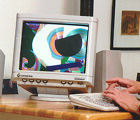
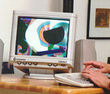

Hasan Bakr, multi-percusionist .. .. Kevin Nathaniel, multi-percussionist .. .. Samia A. Halaby, painter
The Kinetic Painting Group improvises animated computer painting with sound. The moving abstraction is projected onto a theater-size screen while the painter plays the keyboard which creates the painting. Musicians react to the visual signal as the painter reacts to the sounds. Each work is an improvisational jamming of sound and image. The interaction is spontaneous and free within a chosen theme.

 


This is neither a pictorial accompanyment to music nor a musical accompanyment to an animation. The two media interact to create the new formal ideas. You may read a brief description of the themes.
The computer program which makes this possible was written by the painter Samia A. Halaby. It converts the computer keyboard in such a way that pressing the keys creates the moving images in the similar way as the keys of a piano create sounds. This allows the painter to create an abstract painting intuitively and spontaneously in live performance with musicians.
A video was recorded during performance. The visual material is recorded directly from the computer signal while sound is recorded from the sound system.
![[Art on the Net]](/images/artnet_button.gif)